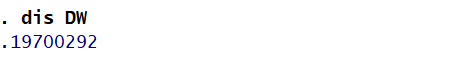
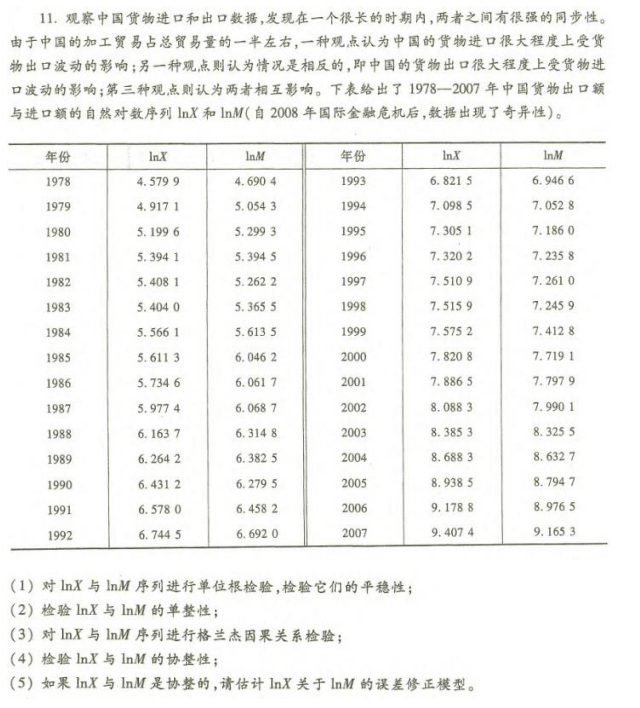
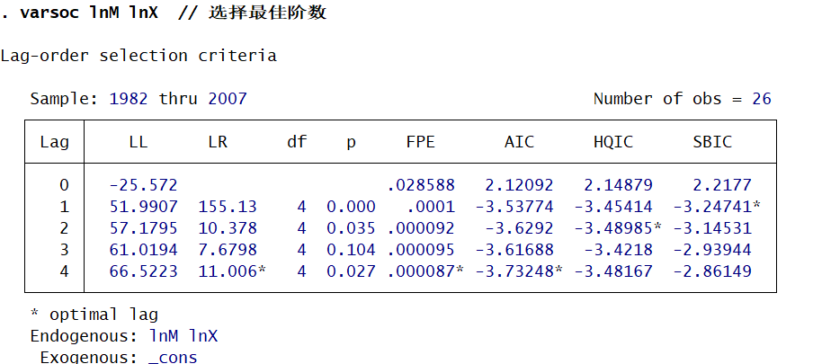
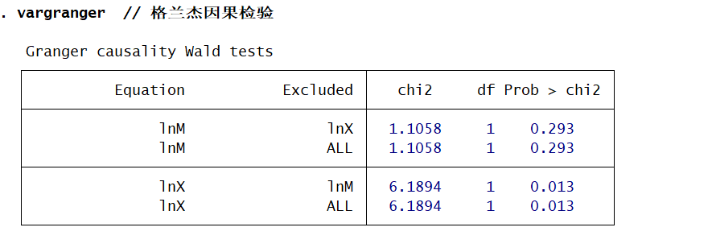
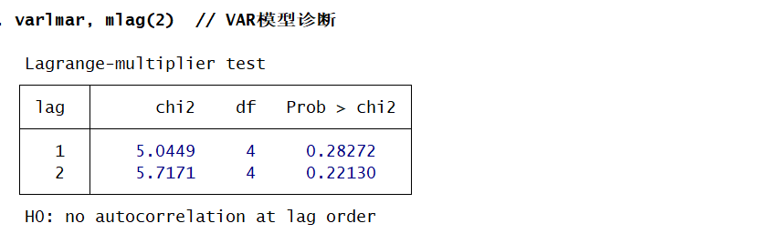
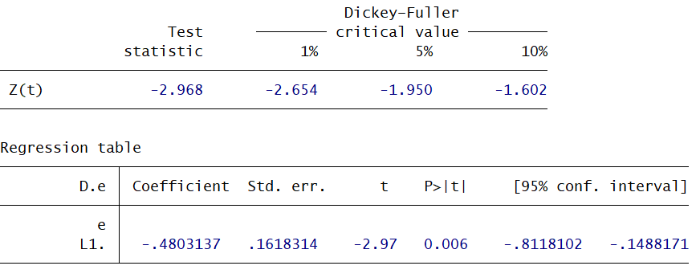
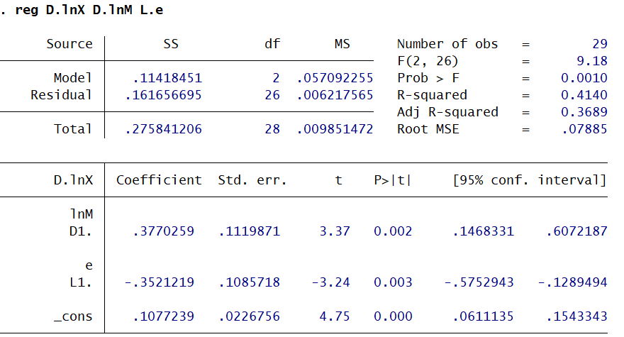
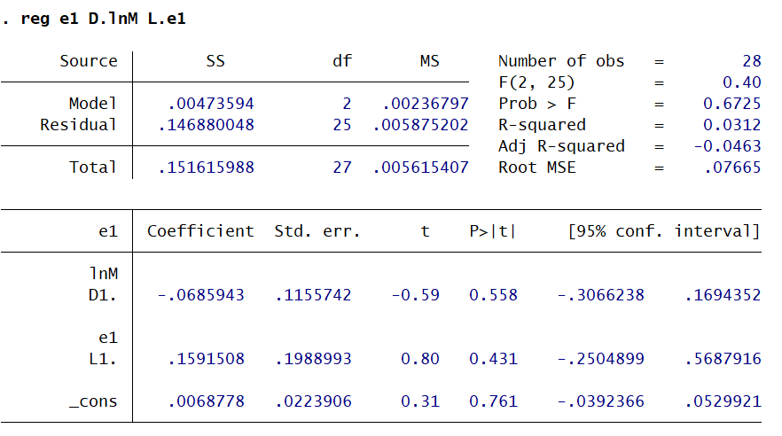

本期内容
- 时间序列模型的序列相关性
- 时间序列的平稳性
- 协整检验与误差修正模型
- 格兰杰因果关系检验
- 代码演示
时间序列模型的序列相关性
为什么会有序列相关性？
-
经济变量固有的惯性 大多数经济时间序列（如GDP、价格、消费等）都有“惯性”或“记忆性”。本期的数值往往受上一期数值的影响，导致随机扰动项在时间上前后关联，从而产生序列相关性（通常表现为正相关）。
-
模型设定的偏误 如果模型构建得“不正确”，会导致序列相关。主要表现为：
- 遗漏了重要的解释变量：被遗漏的变量如果本身具有序列相关性，其影响会进入随机扰动项，导致扰动项出现序列相关。
- 函数形式设定错误：例如真实关系是非线性的（如包含平方项），但模型却设定为线性，这种设定误差会使残差项表现出系统性规律，产生序列相关。
-
数据的“编造” 如果数据是通过已知数据加工生成的（例如对月度数据进行简单平均得到季度数据），这种平均化的处理会减弱原始数据的波动，引入数据的“匀滑性”，从而导致新生成的数据序列之间产生内在联系，引发序列相关性。
序列相关性会导致什么后果？
打破的假设
在高斯-马尔可夫假设中，序列相关性打破了关于“无序列相关”的假设。
- 原假设：随机扰动项之间互不相关，即 $Cov(\mu_i, \mu_j) = 0$ ($i \neq j$)。
- 后果：这意味着扰动项的协方差矩阵不再是对角阵，其非对角线元素不再为0。
有效性丧失
由于上述假设被打破，普通最小二乘法估计量不再具备有效性。
- 方差估计偏差：在使用残差估计随机扰动项的方差时，由于忽略了非对角线上的协方差项，会导致方差和标准误的估计出现偏差（通常在正相关时被低估）。
- 不再是最小方差：普通最小二乘法不再是最佳线性无偏估计量，即存在其他估计方法（如广义最小二乘法）比它更精准。
统计推断失效
方差的错误估计直接导致所有依赖标准误的后续操作失效：
- 假设检验失效：$t$ 检验和 $F$ 检验依赖于标准误。如果标准误被低估，$t$ 值会虚高，导致得出“变量显著”的虚假结论。
- 预测不准：由于参数估计的方差不准确，基于此计算的预测置信区间也是不可靠的。
无偏性与线性性保留
尽管有效性和统计检验出了问题，但普通最小二乘法估计量的线性性和无偏性依然成立。
- 原因：无偏性的证明只依赖于**“严格外生性”**假设（即 $E(\mu|X)=0$），而与扰动项是否存在序列相关无关。
- 结论：参数估计量在平均意义上仍然是准确的（即估计值围绕真实值波动），只是波动范围（方差）变大了，且我们无法用普通公式准确计算出这个范围。
如何检验序列相关性？
图示法
一种比较直观的方法是直接绘制残差图来判断是否存在序列相关性。如果不存在序列相关性，那么图像应该呈现无规律分布，如果图像存在明显的规律分布，那么说明存在序列相关性。
 尽管这种方法简单且直观，但是由于其缺乏明确的判别标准，主观性较强，因此需要引入更加客观的判断方法来检测序列相关性。
尽管这种方法简单且直观，但是由于其缺乏明确的判别标准，主观性较强，因此需要引入更加客观的判断方法来检测序列相关性。
回归检验法
以 $e_t$ 为被解释变量，以各种可能的相关量，诸如 $e_{t-1}$、$e_{t-2}$、$e_t^2$ 等为解释变量，建立各种方程：
$$ \begin{aligned} e_t &= \rho e_{t-1} + \varepsilon_t, & t &= 2, \cdots, n \\ e_t &= \rho_1 e_{t-1} + \rho_2 e_{t-2} + \varepsilon_t, & t &= 3, \cdots, n \end{aligned} $$只要存在某个模型使方程显著成立，说明存在序列相关性。这种方式的优点是在检验序列相关性的同时还能确定序列相关性的形式。
D.W. Test
D.W. Test 是Durbin和Waston提出的一种检验序列自相关的方法，该方法有如下假设：
- 解释变量严格外生
- 随机误差项$\mu_t$为一阶自回归形式： $$ \mu_t = \rho \mu_t + \epsilon_t $$
- 回归模型中不应含有滞后被解释变量作为解释变量
- 回归模型含有截距项
为什么不应含有被解释变量滞后项？
-
判断方式：DW 检验是通过考察残差的前后关系（即 $e_t$ 和 $e_{t-1}$ 的相关性），来推断模型是否存在序列自相关。
-
问题所在：如果在模型中加入了滞后被解释变量（$Y_{t-1}$），它会“吸收”掉残差中本该体现出来的自相关信息，把原本的相关性掩盖住。
-
直接后果：这会导致算出来的残差看起来异常“干净”，使得 DW 统计量虚假地趋近于 2（伪装成无自相关的样子），从而让你误判模型没有问题。
DW检验形式 杜宾和瓦森针对原假设 $H_0: \rho=0$，即 $\mu_t$ 不存在一阶自回归，构造如下统计量：
$$ \text{D.W.} = \frac{\sum_{t=2}^{n} (e_t - e_{t-1})^2}{\sum_{t=1}^{n} e_t^2} $$将分子部分展开，可以得到：
$$ \text{D.W.} = \frac{\sum_{t=2}^{n} e_t^2 + \sum_{t=2}^{n} e_{t-1}^2 - 2\sum_{t=2}^{n} e_t e_{t-1}}{\sum_{t=1}^{n} e_t^2} $$当样本量 $n$ 较大时，$\sum_{t=2}^{n} e_t^2$、$\sum_{t=2}^{n} e_{t-1}^2$ 和 $\sum_{t=1}^{n} e_t^2$ 大致相等，则上式可以化简为：
$$ \text{D.W.} \approx 2 \left( 1 - \frac{\sum_{t=2}^{n} e_t e_{t-1}}{\sum_{t=1}^{n} e_t^2} \right) = 2(1 - \hat{\rho}) $$这是因为当 $n$ 较大时，$\sum_{t=2}^{n} e_t^2$、$\sum_{t=2}^{n} e_{t-1}^2$、$\sum_{t=1}^{n} e_t^2$ 大致相等。
在模型残差的序列相关性分析中，DW统计量与自相关系数存在明确的对应关系：若残差存在明显的正自相关，自相关系数趋近于1，DW统计量则接近0；若存在明显的负自相关，自相关系数趋近于-1，DW统计量则接近4；仅在无自相关的情况下，DW统计量才会在2左右。因此，我们可以通过观察DW值是否接近0、2或4来初步判断相关性的方向，但为了进行准确的统计推断，具体的临界值判断仍需查阅DW检验表。
下面将以李子奈《计量经济学：第五版》表5.1.1的数据为例进行实例演示。
首先给出DW检验的Stata实现:
|
|
结果如下：

GB Test
|
|
如何应对序列相关性？
广义差分法
广义差分法是将原模型转换为满足普通最小二乘的差分模型，再进行普通最小二乘估计
|
|
稳健标准误
在大样本情况下，稳健标准误得到的结果是相对可靠的。但是值得注意的是，稳健标准误并不能消除序列自相关问题，他只能得到参数估计量的正确标准误，从而使后续的各类检验与预测得以顺利进行。
|
|
时间序列的平稳性
平稳性的概念
平稳性描述的是一个时间序列的统计性质是否随时间发生变化。如果一个时间序列的均值、方差和协方差都不随时间推移而改变，就称该序列是平稳的。
具体来说，平稳性要求三个条件同时成立：
\[ E(X_t) = \mu \quad \text{均值是常数，不随时间变化} \]\[ \text{Var}(X_t) = \sigma^2 \quad \text{方差是常数，不随时间变化} \]\[ \text{Cov}(X_t, X_{t+k}) = \gamma_k \quad \text{协方差只取决于时间间隔 } k \text{，与具体时点 } t \text{ 无关} \]如果一个序列满足以上三个条件，就称为宽平稳或弱平稳。这是时间序列分析中最常用的平稳性定义。
平稳与非平稳的例子
白噪声过程是最典型的平稳序列：
\[ X_t = \mu_t, \quad \mu_t \sim N(0, \sigma^2) \]它的每一个观测值都是从同一个正态分布中独立抽取的，均值始终为零，方差始终为常数，不同时点之间也没有相关性。
随机游走过程是最典型的非平稳序列：
\[ X_t = X_{t-1} + \mu_t, \quad \mu_t \sim N(0, \sigma^2) \]它的当前值是上一期值加上一个随机扰动，扰动的影响会永久保留在序列中，不会消失。随着时间推移，序列的方差会越来越大，均值也不固定，因此不满足平稳性条件。
随机游走的一阶差分恰好是白噪声，因而是平稳的：
\[ \Delta X_t = X_t - X_{t-1} = \mu_t \]这说明差分操作可以将某些非平稳序列转化为平稳序列。
为什么需要平稳性
在经典计量经济学模型中，数据被视为从总体中随机抽取的样本。但对于时间序列数据，每次只能得到一个实现，不存在重复抽样的可能。平稳性在这里起到替代作用：如果一个时间序列是平稳的，它的统计性质不随时间改变，就可以用过去的信息推断未来的特征，大数定律和中心极限定理仍然适用，OLS估计量具有一致性和渐进正态性。
如果忽视平稳性，直接用非平稳序列进行回归，很容易出现虚假回归——两个在经济意义上毫无关系的非平稳序列，可能会在回归中呈现出很高的R²和非常显著的t统计量，造成存在因果关系的假象。
如何检验时间序列的平稳性
检验平稳性的核心方法是单位根检验。单位根检验的基本思想是：如果一个时间序列的当前值在很大程度上取决于上一期的值，即自回归系数接近1，那么这个序列很可能是不平稳的。
DF检验
DF检验是最早的单位根检验方法。考虑一阶自回归过程：
\[ X_t = \rho X_{t-1} + \mu_t \]令 \(\delta = \rho - 1\)，可将上式改写为：
\[ \Delta X_t = \delta X_{t-1} + \mu_t \]检验的原假设和备择假设为：
\[ H_0: \rho = 1 \;(\delta = 0) \quad \text{存在单位根，非平稳} \]\[ H_1: \rho < 1 \;(\delta < 0) \quad \text{平稳} \]
DF检验统计量为：
\[ \text{DF} = \frac{\hat{\delta}}{\text{SE}(\hat{\delta})} \]DF检验的困难在于，在原假设成立的情况下，该统计量不服从标准的t分布，而是服从一种特殊的DF分布，因此需要使用专门的临界值表进行判断。
ADF检验
DF检验假设时间序列由一阶自回归过程生成，且误差项是白噪声。但实际数据往往由更高阶的自回归过程生成，或者误差项本身存在自相关，这时DF检验会失效。
ADF检验在DF检验的基础上加入了差分滞后项，目的是消除误差项中可能存在的自相关，使检验结果更加可靠。这是目前应用最广泛的单位根检验方法。
ADF检验包含三个模型，区别在于是否包含常数项和时间趋势项：
模型1（无常数项、无趋势项），适用于均值为零的序列：
\[ \Delta X_t = \delta X_{t-1} + \sum_{i=1}^{p} \beta_i \Delta X_{t-i} + \mu_t \]模型2（有常数项、无趋势项），适用于均值非零但没有明显趋势的序列：
\[ \Delta X_t = \alpha + \delta X_{t-1} + \sum_{i=1}^{p} \beta_i \Delta X_{t-i} + \mu_t \]模型3（有常数项、有时间趋势项），适用于有明显上升或下降趋势的序列：
\[ \Delta X_t = \alpha + \beta t + \delta X_{t-1} + \sum_{i=1}^{p} \beta_i \Delta X_{t-i} + \mu_t \]三个模型的检验假设相同：
\[ H_0: \delta = 0 \quad \text{存在单位根} \]\[ H_1: \delta < 0 \quad \text{平稳} \]
实际检验时，通常从模型3开始，依次向模型1推进。只要在某一个模型中拒绝了单位根的原假设，就认为序列是平稳的，检验到此结束。
滞后阶数的选择
ADF检验中需要确定差分滞后项的阶数 \(p\)。如果阶数太小，误差项中可能残留自相关，导致检验结果有偏；如果阶数太大，又会降低检验的效力。一般原则是以误差项不存在序列相关为标准来选择滞后阶数。
单整的概念
什么是单整
如果一个时间序列本身是非平稳的，但经过一次差分后变成平稳序列，就称该序列是一阶单整的，记为 \(I(1)\)。如果经过 \(d\) 次差分后才变成平稳序列，就称该序列是 \(d\) 阶单整的，记为 \(I(d)\)。
\[ \Delta^d X_t \sim I(0) \]平稳序列本身就是零阶单整的，记为 \(I(0)\)。
单整的经济含义
单整阶数反映了时间序列中随机趋势的持久性程度。\(I(0)\) 序列的扰动是短暂的，冲击效应会很快消退，序列会回到原来的均值附近。\(I(1)\) 序列的扰动是持久的，每一次冲击都会永久性地改变序列的水平值，序列没有固定的均值。
大多数宏观经济变量，如以不变价格计算的消费、收入、GDP等，通常表现为 \(I(1)\) 序列。而以当年价格计算的同类变量，由于包含了价格水平的趋势，往往是 \(I(2)\) 序列。利率、汇率等变量有时表现为 \(I(0)\) 序列。
单整与后续分析的关系
两个变量如果要进行协整分析，必须满足同阶单整的条件。也就是说，只有两个同为 \(I(1)\) 的变量，才有可能存在长期稳定的均衡关系。如果两个变量的单整阶数不同，就不可能协整，也不能直接用经典回归方法建立模型。
趋势平稳与差分平稳
非平稳时间序列的产生原因有两种不同的机制，对应着两种不同类型的非平稳过程。
差分平稳过程
差分平稳过程的形式是当前值等于上一期值加上一个常数漂移项再加上随机扰动：
\[ X_t = \alpha + X_{t-1} + \mu_t \]等价于一阶差分形式：
\[ \Delta X_t = \alpha + \mu_t \]这类序列的走势是随机性的，每一次冲击都会永久性地改变序列的未来路径。处理这类序列的方法是进行差分，差分后的序列会变成平稳的。这类序列之所以称为差分平稳，是因为只有通过差分才能使其变得平稳。
趋势平稳过程
趋势平稳过程的形式是序列围绕一条确定性的时间趋势线波动，趋势线本身的斜率是固定的：
\[ X_t = \alpha + \beta t + \mu_t \]这类序列的非平稳来源于确定性的时间趋势，而不是随机冲击的累积。只要在回归模型中引入时间趋势项，就可以将趋势分离出来，剩下的部分 \(\mu_t\) 是平稳的。这类序列之所以称为趋势平稳，是因为去除确定性趋势后它就是平稳的，不需要进行差分。
两者的区分方法
区分一个非平稳序列究竟是差分平稳还是趋势平稳，需要通过ADF检验的模型3来判断。在这个模型中同时包含了单位根检验和趋势项检验：
\[ \Delta X_t = \alpha + \beta t + \delta X_{t-1} + \sum_{i=1}^{p} \beta_i \Delta X_{t-i} + \mu_t \]如果检验结果表明 \(\delta = 0\) 不能被拒绝，即存在单位根，那么序列是差分平稳的；如果 \(\delta < 0\) 显著且趋势项 \(\beta\) 显著，那么序列是趋势平稳的。
两种处理的区别
对趋势平稳序列进行差分会导致过度差分，损失有用信息，并且可能引入原本不存在的序列相关。对差分平稳序列只去除确定性趋势而不进行差分，则无法彻底消除非平稳性，残差中仍然包含随机趋势。因此，正确区分这两种类型对于后续建模至关重要。
协整检验与误差修正模型
长期均衡
经济理论指出，某些经济变量之间确实存在着长期均衡关系。这种均衡关系意味着经济系统不存在破坏均衡的内在机制。如果变量在某时期受到干扰后偏离其长期均衡点，均衡机制会在下一期进行调整，使其重新回到均衡状态。
假设X与Y之间的长期"均衡关系"由以下方程描述：
\[ Y_t = \alpha_0 + \alpha_1 X_t + \mu_t \]这个方程的含义是：给定X的一个值，Y相应的均衡值也随之确定为 \(\alpha_0 + \alpha_1 X\)。
在t-1期末，可能出现三种情形：
- Y等于它的均衡值
- Y小于它的均衡值
- Y大于它的均衡值
如果方程正确地揭示了X与Y之间的长期稳定关系，那么Y对其均衡点的偏离从本质上是临时性的。这意味着随机扰动项 \(\mu_t\) 必须是平稳序列。如果 \(\mu_t\) 有随机性趋势，就会导致Y对其均衡点的任何偏离被长期累积下来而无法消除。
这个随机扰动项也被称为非均衡误差，它是变量X与Y的一个线性组合：
\[ \mu_t = Y_t - \alpha_0 - \alpha_1 X_t \]协整
协整的定义
如果X与Y之间的长期均衡关系正确，那么非均衡误差应是一个平稳时间序列，即具有零均值的I(0)序列。换言之，X和Y虽然是非平稳的时间序列，但存在它们的某个线性组合是平稳的。这时称变量X与Y是协整的。
更一般的定义是：如果序列 \(X_{1t}, X_{2t}, ..., X_{kt}\) 都是d阶单整，存在向量 \(\alpha = (\alpha_1, \alpha_2, ..., \alpha_k)\) 使得 \(\alpha X^T \sim I(d-b)\)，则称这些序列是(d,b)阶协整的，记为 \(X_t \sim CI(d,b)\)，\(\alpha\) 为协整向量。
协整的关键条件
两个变量如果都是单整变量，只有当它们的单整阶数相同时，才可能协整。如果单整阶数不同，就不可能协整。
三个以上的变量，如果具有不同的单整阶数，有可能经过线性组合构成低阶单整变量。
(d,d)阶协整是一类非常重要的协整关系。它的经济意义在于：两个变量虽然各有自己的长期波动规律，但如果它们是(d,d)阶协整的，则它们之间存在一个长期稳定的比例关系。这意味着尽管两个时间序列是非平稳的，仍然可以用经典的回归分析方法建立模型。
协整方程与均衡方程的区别
协整方程不等于均衡方程。协整方程具有统计意义，而均衡方程具有经济意义。时间序列之间在经济上存在均衡关系，在统计上一定存在协整关系；反之，在统计上存在协整关系的时间序列之间，在经济上并不一定存在均衡关系。协整关系是均衡关系的必要条件，而不是充分条件。
此外，均衡方程中应该包含均衡系统中的所有时间序列，而协整方程中可以只包含其中的一部分。协整方程的随机扰动项是平稳的，而均衡方程的随机扰动项必须是白噪声。不能由协整导出均衡，只能用协整检验均衡。
EG检验
EG检验由Engle和Granger提出，用于检验两个I(1)变量之间是否存在协整关系。它分为两步。
Step1:协整回归
用OLS方法估计方程：
\[ Y_t = \alpha_0 + \alpha_1 X_t + \mu_t \]并计算非均衡误差：
\[ \hat{Y}_t = \hat{\alpha}_0 + \hat{\alpha}_1 X_t \]\[ \hat{\mu}_t = Y_t - \hat{\alpha}_0 - \hat{\alpha}_1 X_t \]
这一步称为协整回归或静态回归。
Step2:检验非均衡误差的单整性
对残差序列 \(\hat{\mu}_t\) 进行DF检验或ADF检验。如果残差是平稳的，即I(0)，则认为变量 \(Y_t\) 和 \(X_t\) 是(1,1)阶协整的；否则认为不存在协整关系。
需要注意一个关键问题：这里的DF或ADF检验是针对协整回归计算出的残差项，而非真正的非均衡误差。由于OLS法采用了残差最小平方和原理，估计量存在向下偏倚，这会使得拒绝零假设的机会比实际情形更大。因此，对残差平稳性检验的DF与ADF临界值应该比正常的临界值更小。MacKinnon通过模拟试验给出了协整检验专用的临界值表，应用时必须使用这张表，而不是普通的ADF临界值表。
对于多变量协整关系的检验，基本思路与双变量情形相同，但需要将所有变量轮流作为被解释变量进行检验。当所有变量都被作为被解释变量检验之后，仍不能得到平稳的残差项序列，则认为这些变量间不存在协整关系。
误差修正模型
为什么需要误差修正模型
对于非平稳时间序列，可以通过差分的方法将其化为平稳序列，然后建立经典回归模型。但差分模型只表达了变量间的短期关系，没有揭示它们之间的长期关系，关于变量水平值的重要信息会被忽略。此外，如果原模型的误差项不存在序列相关，差分后的误差项会成为一个一阶移动平均时间序列，因而是序列相关的。
误差修正模型的形式
误差修正模型是一种具有特定形式的计量经济学模型。以一阶误差修正模型为例：
\[ \Delta Y_t = \beta_1 \Delta X_t - \lambda (Y_{t-1} - \alpha_0 - \alpha_1 X_{t-1}) + \mu_t \]其中 \(ecm_{t-1} = Y_{t-1} - \alpha_0 - \alpha_1 X_{t-1}\) 称为误差修正项。
这个模型的经济含义非常直观：Y的变化取决于两个部分，一是X的短期变化 \(\Delta X_t\)，二是前一时期的非均衡程度 \(ecm_{t-1}\)。如果t-1时刻Y大于其长期均衡解，ecm为正，则 \(-\lambda ecm\) 为负，使得 \(\Delta Y_t\) 减小；如果t-1时刻Y小于其长期均衡解，ecm为负，则 \(-\lambda ecm\) 为正，使得 \(\Delta Y_t\) 增大。这体现了长期非均衡误差对短期变化的控制作用。
Granger表述定理
Granger和Engle在1987年提出，如果变量X与Y是协整的，则它们之间的短期非均衡关系总能由一个误差修正模型表述。这个定理为误差修正模型提供了理论基础。
Engle-Granger两步法建立误差修正模型
第一步，进行协整回归，检验变量间的协整关系，估计长期均衡关系参数。
第二步，如果协整性存在，则以第一步求得的残差作为非均衡误差项，加入到误差修正模型中，并用OLS法估计相应参数。第二步中变量差分滞后项的多少，可以根据残差项序列是否存在自相关性来判断。如果存在自相关，则需要加入变量差分的滞后项。
需要注意的是，如果误差修正模型中误差修正项的参数估计值为正，模型肯定是错误的。因为误差修正机制要求偏离均衡时系统会向均衡方向回调，所以这个参数必须为负。
格兰杰因果关系检验
自回归模型与向量自回归模型
单变量自回归模型 AR(p)
p 阶自回归模型形式为：
\[ X_t = \phi_1 X_{t-1} + \phi_2 X_{t-2} + \cdots + \phi_p X_{t-p} + \mu_t,\quad \mu_t \sim WN(0,\sigma^2) \]AR(p) 模型平稳的条件是特征方程 \(\det(I - \phi_1 z - \cdots - \phi_p z^p)=0\) 的根均在单位圆外（模大于1）。
自回归分布滞后模型 ADL(p,q)
引入其他变量的滞后项：
\[ Y_t = \phi_0 + \sum_{i=1}^p \phi_i Y_{t-i} + \sum_{j=0}^q \gamma_j X_{t-j} + \mu_t \]若满足基本假设，OLS 估计量在大样本下一致。
向量自回归模型 VAR(p)
将单变量 AR 扩展为多变量系统，k 个 I(0) 变量的 VAR(p)：
\[ \mathbf{Y}_t = \boldsymbol{\mu} + \mathbf{A}_1 \mathbf{Y}_{t-1} + \mathbf{A}_2 \mathbf{Y}_{t-2} + \cdots + \mathbf{A}_p \mathbf{Y}_{t-p} + \boldsymbol{\varepsilon}_t \]其中 \(\mathbf{Y}_t = (Y_{1t}, Y_{2t}, \dots, Y_{kt})'\)，每个方程可用 OLS 分别估计。滞后阶数 p 由 AIC、SC、LR 等信息准则确定。
格兰杰因果关系的思想
若利用 X 的过去值能显著提高对 Y 当前值的预测精度（超过只用 Y 自身过去值），则称 X 是 Y 的格兰杰原因（Granger-cause Y）。注意这是统计意义上的"预测因果关系"，不等同于经济因果关系。
双向检验的两个辅助回归：
\[ Y_t = \sum_{i=1}^m \alpha_i X_{t-i} + \sum_{i=1}^m \beta_i Y_{t-i} + \mu_{1t} \]\[ X_t = \sum_{i=1}^m \lambda_i X_{t-i} + \sum_{i=1}^m \delta_i Y_{t-i} + \mu_{2t} \]- X 是 Y 的格兰杰原因：\(\alpha_1 = \alpha_2 = \cdots = \alpha_m = 0\) 不成立
- Y 是 X 的格兰杰原因：\(\delta_1 = \delta_2 = \cdots = \delta_m = 0\) 不成立
- 双向因果：两组约束均被拒绝
- 无因果：两组约束均不被拒绝
检验步骤与统计量
以检验"X 不是 Y 的格兰杰原因"为例：
无约束模型（UR）：
\[ Y_t = \sum_{i=1}^m \alpha_i X_{t-i} + \sum_{i=1}^m \beta_i Y_{t-i} + \mu_{1t} \]受约束模型（R，去掉 X 的滞后项）：
\[ Y_t = \sum_{i=1}^m \beta_i Y_{t-i} + \nu_t \]原假设 \(H_0: \alpha_1 = \alpha_2 = \cdots = \alpha_m = 0\)，检验统计量为：
\[ F = \frac{(RSS_R - RSS_U)/m}{RSS_U/(n-k)} \stackrel{H_0}{\sim} F(m, n-k) \]其中 \(RSS_R\) 为受限模型残差平方和，\(RSS_U\) 为无约束模型残差平方和，m 为滞后阶数，k 为无约束模型参数个数（含常数项）。若 F 值大于临界值则拒绝原假设，认为 X 是 Y 的格兰杰原因。
同理对称地检验 Y 是否是 X 的格兰杰原因。
应用中需注意的问题
滞后阶数的选择： 检验结果对滞后阶数敏感。通常以 VAR 模型中残差不存在序列相关、AIC/SC 最小为准则选定滞后阶数，再做格兰杰检验。
非平稳序列： 理论上要求序列平稳。若两变量同阶单整且存在协整关系，可直接对水平值做格兰杰因果检验（有文献支持其渐近性质）；若无协整的 I(1) 序列，应先差分再检验，但此时解释的是差分变量间的短期引导关系，经济含义发生变化。
格兰杰因果的含义： 通过检验只说明 X 的历史信息对预测 Y 有帮助，是经济因果关系的必要条件而非充分条件——统计上显著不代表经济上存在真实因果，统计上不显著也不绝对排除经济因果（可能因样本或滞后设定不当）。
代码演示
这里以李子奈《计量经济学:第五版》第五章课后习题第11题为例进行平稳性检验，协整分析以及格兰杰因果检验的代码实现。

平稳性检验
这里主要采用ADF检验来对序列平稳性进行检验。
ADF检验思路为先用模型3确定滞后阶数，然后用这个阶数检验模型3本身是否显著。如果模型3显著，则判定平稳，检验结束。如果模型3不显著，则换用模型2，重新确定滞后阶数，再用新阶数检验模型2是否显著。如果模型2仍不显著，再换用模型1，重新确定滞后阶数并检验。三个模型依次进行，每个模型都独立完成定阶和检验两步，直到某个模型显著为止；如果三个模型全部不显著，则判定序列非平稳。
下面给出代码：
|
|
这里最终的结果是两个序列皆不平稳。
单整性检验
但整形的检验和前面平稳性检验的思路一致，只是将检测的序列由原序列改为差分序列，下面给出代码示例。
|
|
这里最终得到的结果是两个一阶差分序列皆平稳。
格兰杰因果检验
进行格兰杰因果检验的思路是先确定向量自回归模型的最佳阶数，然后再进行格兰杰因果检验，否则错误的结束可能会影响结果的有效性，下面给出代码演示：
|
|
varsoc的结果如下图所示：

阶数为1时相应格兰杰因果检验结果如下：

模型检验结果如下：

协整分析
对于协整分析，我们一般采用E-G两步法进行检验，代码示例如下：
|
|
这里对回归模型的残差序列进行平稳性检验，得到的结果如下：

误差修正模型ECM
对于误差修正模型ECM，一种简单的理解方式是在差分模型的基础上加入协整模型中的残差项，注意这一残差项的回归系数一定为负数，否则说明模型设定有误。下面给出代码实例：
|
|
模型拟合结果如下：

